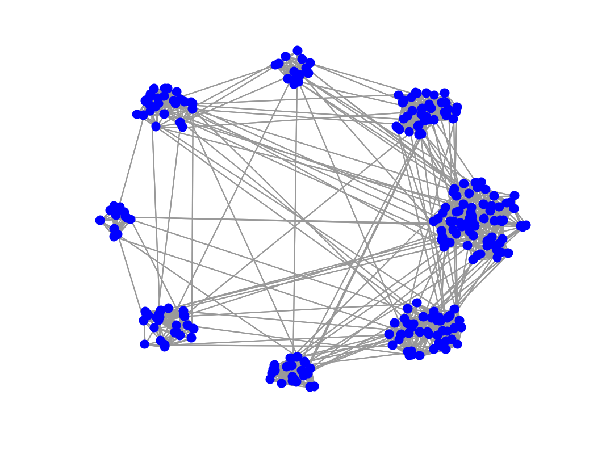

Description
This function create a 2 dimentional random sensor graph. All the
coordonates are between 0 and 1.
param is an optional structure with the following fields
- param.Nc : Number of communities (default round(sqrt(N)/2) )
- param.verbose: display parameter - 0 no log - 1 display the errors
(default 1)
- param.com_sizes : size of the communities. The sum of the sizes has
to be equal to \(N\). Leave this field empty if you want random sizes.
- param.min_comm : Minimum size of the community
(default: round(N / param.Nc / 3) )
- param.min_deg: Minimum degree of each nodes (default:
round(param.min_comm / 2)) (NOT WORKING YET!)
- param.size_ratio: ratio between radius of world and radius of
communities (default 1)
- param.world_density probability of a random edge between any pair
of nodes (default 1/N)
Example:
G = gsp_community();
paramplot.show_edges = 1;
gsp_plot_graph(G,paramplot);
